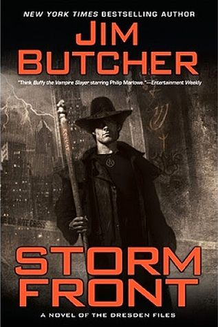
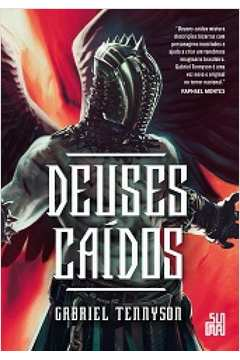
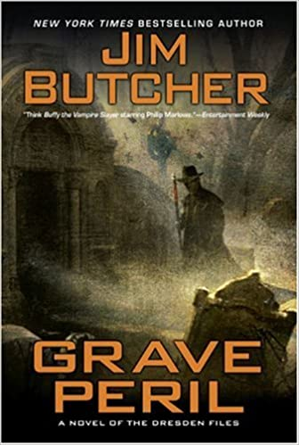

Sinopse
Frases e quotes de meus livros favoritos

Meus Livros
- 
Have you ever been approached by a grim-looking man, carrying a
naked sword with a blade about ten miles long in his hand,
in the middle of the night,beneath the stars on the shores of Lake Michigan?
If you have, seek professional help.
If you have not, then believe you me, it can scare the bejeezus out of you.
- 
São Cipriano, o ancestral da família,fora caçado pelos cristãos
antes de sua falsa conversão. Ao contrário do que contavam as histórias,
jamais abandonou o lado obscuro do paganismo.
Seu livro, o verdadeiro Capa-de-ferro
-
As mentiras,minha querida - disse ele largando o equipamento no chão.
Primeiro as chamamos de "historias"que contamos para evitar incoveniências ou ajudar a encarar a relidade.
Logo nos convencemos de que são "inevitaveis" para nossa sobrevivência...
Quando nos damos conta,elas se tornaram parte do navegar natural entre as necessidades.
- 
Michael half-smiled. “The Lord will never give you a burden bigger than your shoulders can bear,Harry.
All we can do is face what comes and have faith.”
I gave him a sour glance. “I need to get myself some bigger shoulders,
then. Someone in accounting must have made a mistake.